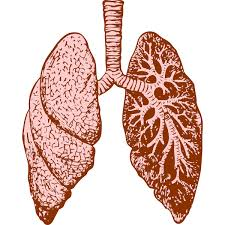

by Stephanie Mines
Text taken from: www.tara-approach.org
by Stephanie Mines
The field of Pre and Perinatal Psychology is quite new. As science reveals more about the neurology and physiology of our earliest development during the primal period (conception through the third year of life), and as we enhance our understanding of the nervous system, we are forced to recognize a collective error. We have been completely wrong about the nature of prenatal life and the postnatal period. The belief that prenatal life is without awareness has been proven false. We are coming out of the dark ages in this regard. Prenatal life is drenched in consciousness, albeit implicit consciousness, and lays the foundation for all future health. Similarly, attunement, attachment and bonding are required throughout pregnancy and are essential for neurological unfolding.
Continue readingby Encyclopaedia Britannica

Text taken from: www.britannica.com
Diseases of the respiratory system may affect any of the structures and organs that have to do with breathing, including the nasal cavities, the pharynx (or throat), the larynx, the trachea (or windpipe), the bronchi and bronchioles, the tissues of the lungs, and the respiratory muscles of the chest cage.
The respiratory tract is the site of an exceptionally large range of disorders for three main reasons: (1) it is exposed to the environment and therefore may be affected by inhaled organisms, dusts, or gases; (2) it possesses a large network of capillaries through which the entire output of the heart has to pass, which means that diseases that affect the small blood vessels are likely to affect the lung; and (3) it may be the site of “sensitivity” or allergic phenomena that may profoundly affect function.
Continue reading